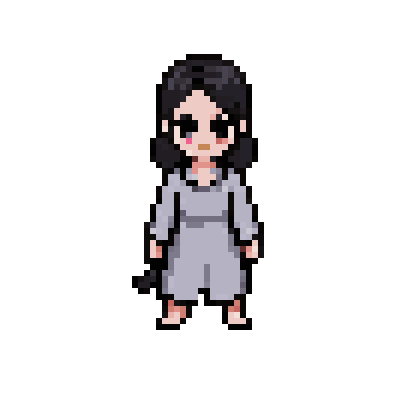
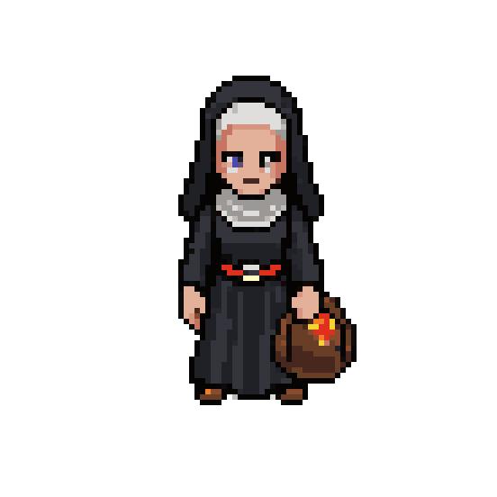
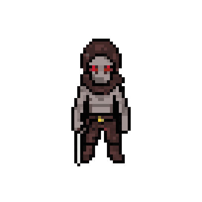
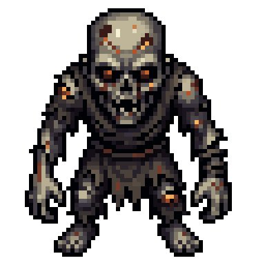
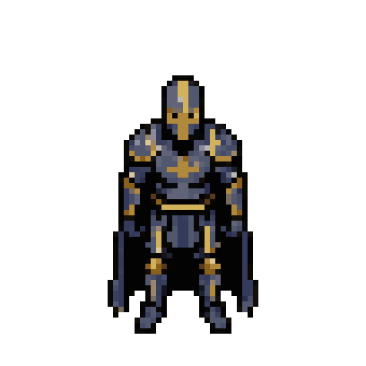
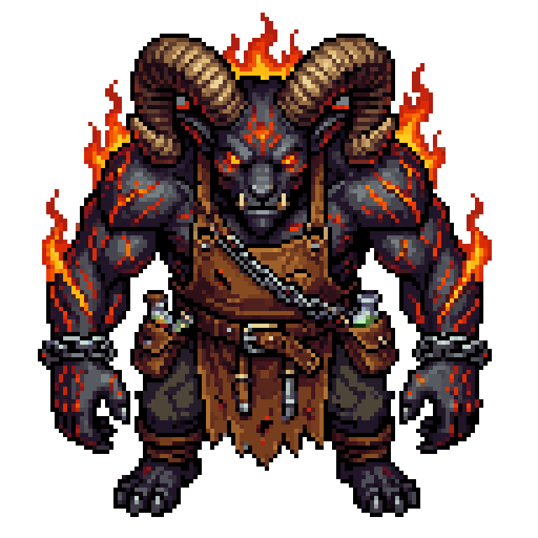
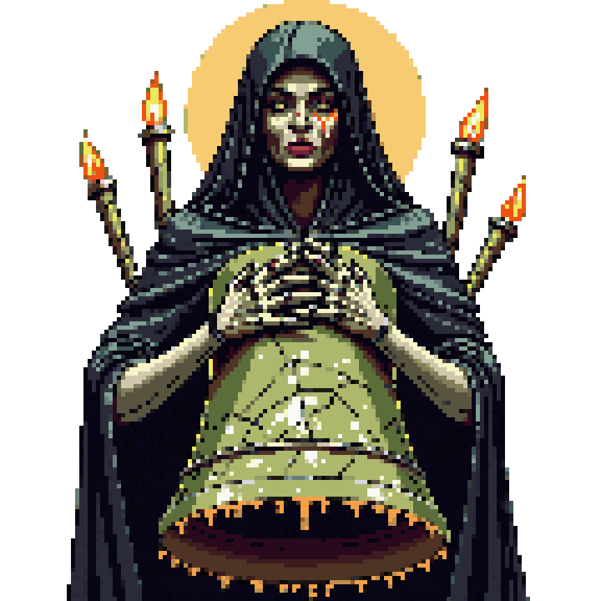
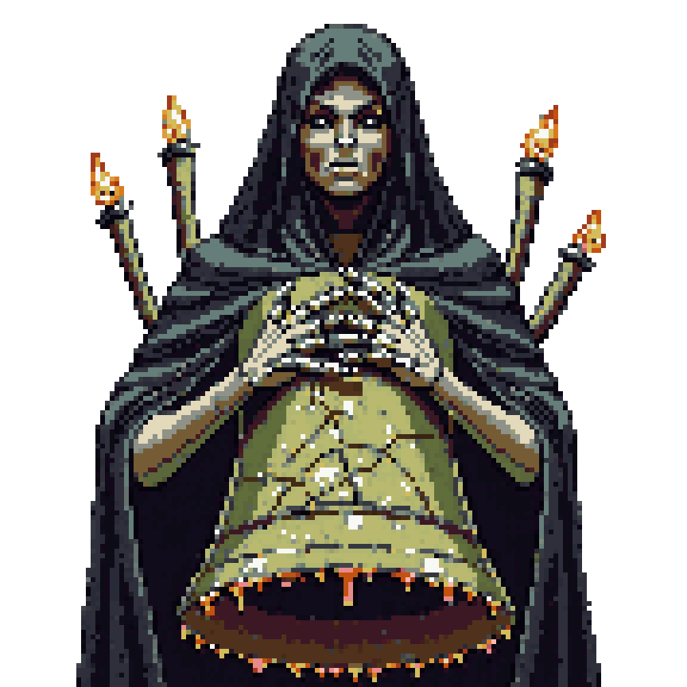
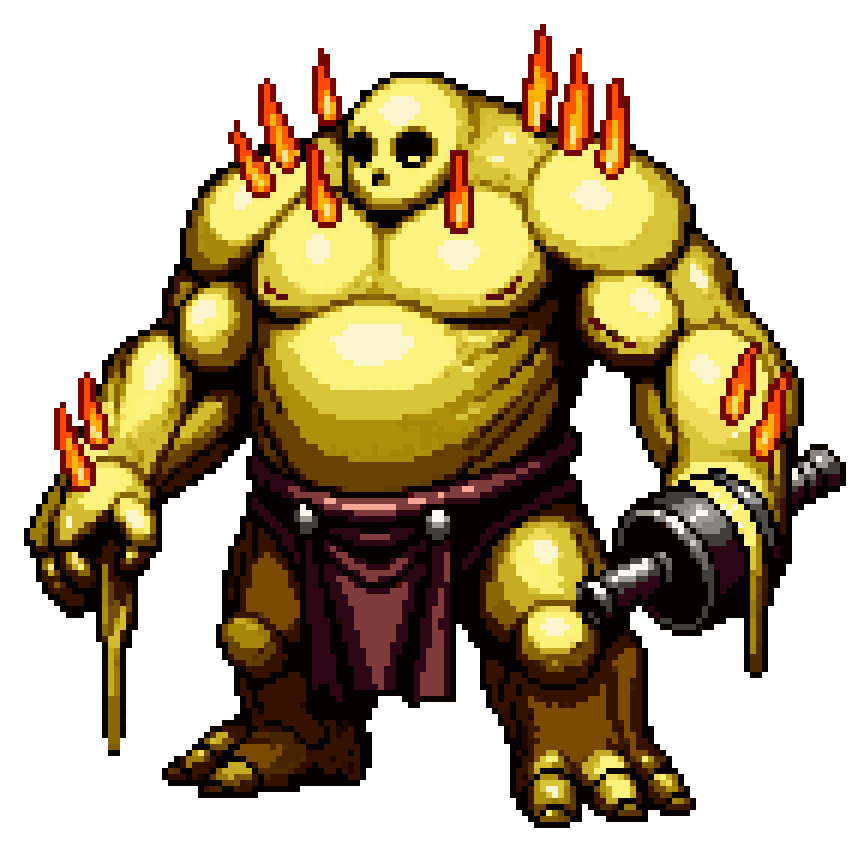

«Aquí quemábamos a los que no podían dormir. Yo atizaba. Tú también, Velador: te he visto las manos.» — Hermana Lumbre
Hondavela no está vacía. Quedan unos pocos que todavía hablan, muchos que ya solo golpean y algunos, grandes y tristes, que guardan una puerta que nadie les pidió guardar. Este capítulo los reúne a todos.
Los que aún hablan
Hablar con alguien es acercarse y pulsar USAR (en pantalla, el botón cambia a HABLAR cuando hay un NPC al lado). Cada vez que vuelves a hablarles dicen otra cosa: los secretos se dan a trozos.
Ilse, la Campanera

Ilse, la Campanera
«No te duermas. ¿Lo oyes? Mientras suene, no viene.»
Dónde: el Campanario Hendido, junto a la cuerda de la campana grande.
Quién es: una niña que toca la campana toda la noche para no dormirse. Su madre le dijo que dormir era como apagar una vela. Tiene las manos en carne viva.
Qué pide: el Badajo Perdido, el corazón de hierro de la campana grande. Alguien lo arrancó y lo bajó a los muertos para que la torre callara. Está en un cadáver del Osario.
Qué da: la Campanilla de Ilse a cambio del badajo. Además, con la campana grande otra vez sonando, el muro que vibra del Campanario cede y abre un camino nuevo.
Hermana Lumbre

Hermana Lumbre
«Otra vela más que no quiere arder. Siéntate. El fuego no pregunta de dónde viene la leña.»
Dónde: la plaza del Barrio de los Veladores, atizando la hoguera de las piras.
Quién es: una Veladora que atizaba las piras donde se quemaba a los Insomnes. Habla de ello sin bajar la voz.
Qué pide:Cera de Vigilia, tres gotas, para que su hoguera no se apague. Las hay en el Barrio, el Osario y el Campanario.
Qué da: con las tres, la Hoguera Avivada («Calienta, ¿verdad? Siempre calentamos»).
Tras la caída del Rey del Túmulo tiene algo que confesar. Vuelve a hablar con ella.
Odo el Sepulturero
«Bajo tierra no hay campanas. Bajo tierra hay que dormir, ¿no? Alguna vez.»
Dónde: en el Camposanto del Relevo, entre las tumbas.
Quién es: enterraba lo que quedaba de las piras. Creía que bajo tierra, a oscuras, por fin dormirían. A algunos los metía vivos.
Qué pide:Lápidas sin Nombre, losas lisas sin una sola letra. Hay tres: en el Camposanto, el Barrio y el Osario.
Qué da: 200 de Ceniza por cada lápida.
La Buhonera
«Compra, compra. La Ceniza no se lleva a la tumba… bueno, tú sí te la llevas, pero luego vuelves a por ella.»
Dónde: en el Camposanto del Relevo.
Qué ofrece: vende lo que encuentra en los muertos. Su surtido crece a medida que caen los jefes.
Mercancía
Desde
Cuchillo de hueso, Incienso amargo
siempre
Báculo de Vela (600 de Ceniza, uno)
siempre
Ceniza ávida (amuleto)
siempre
Musgo de tumba, Bomba de brea, Hueso de velador (3 como mucho)
tras el Rey del Túmulo
Hueso hueco (amuleto)
tras el Rey del Túmulo
Nana embotellada, Ascua viva, Esquirla de vasija (2 como mucho)
tras el Campanero Ahorcado
Lágrima espesa (amuleto)
tras el Campanero Ahorcado
Esquirla de reja (6 como mucho)
tras la Plañidera Mayor
Anselmo el Fundidor
«Fundí las rejas de los dormitorios cuando la Durmiente aún dormía. Ahora fundo lo que me traigan.»
Dónde: en el Osario, junto a su fragua. Está casi ciego: el calor se le llevó los ojos.
Qué ofrece:
Refundir armas hasta +5 con Esquirlas de reja y Ceniza. Cada nivel pide una esquirla más que el anterior y 300 de Ceniza más: de +0 a +1, 1 esquirla y 300; de +4 a +5, 5 esquirlas y 1.500. Cada jefe deja dos esquirlas.
Forjar con lo que dejaron: armas con la forma de los jefes caídos (Lanza de Aldric, Badajo del Campanero, Colmillo del Sabueso, Remo de la Madre, Cazo del Cerero, Espada del Capitán, Espada del Alado). Se detallan en el capítulo del arsenal.
Bestiario
Los enemigos comunes vuelven a levantarse cada vez que descansas en una hoguera. Todos avisan antes de golpear: los ojos se encienden, una cuña se rellena en el suelo en la dirección del golpe y suena un chasquido. Si el aviso parpadea dos veces en ámbar, el golpe viene retrasado: espera antes de rodar.
Comportamientos que comparten:
Salto. Algunos saltan sobre ti desde lejos. Una sombra en el suelo marca dónde caerán: sal de ella.
Giro. Otros giran sobre sí mismos con el arma. Un círculo de aviso dibuja el alcance: rueda hacia fuera.
Furia. Malheridos, muchos rugen una vez y a partir de ahí atacan más rápido y encadenan embestidas. Si oyes el rugido, retrocede o remata ya.
Memoria. Los Desvelados aprenden tus costumbres. Si siempre ruedas al mismo tiempo, empezarán a retrasar el golpe; si te curas cerca de ellos, te castigarán al beber. Descansar en una hoguera les hace olvidar un poco.
Doce muertes. Un enemigo al que has matado doce veces en el mismo sitio ya no vuelve a levantarse.
En las tablas, la vida y el daño son los de base. En el Camposanto los enemigos tienen un 35 % menos de vida, y en cada ciclo nuevo (Nueva Partida+) suben.
Desvelado

Desvelado
Antiguo vecino de Hondavela, consumido por la vigilia. Olvidó su nombre, luego su rostro, luego la razón de estar en pie. Solo recuerda cómo golpear.
Vida
Daño
Ceniza
Dónde
66
20
60
casi toda Hondavela
Hace: embestida corta tras un aviso claro. Salta desde media distancia. Furia al 35 % de vida.
Consejo: el maestro de todo. Aprende con él el ritmo de su golpe: bloquear, desviar o rodar hacia un lado y castigar en la recuperación.
Centinela de Hueso
Montó guardia en la muralla tanto tiempo que la carne se le cansó primero. Nadie vino a relevarlo.
Hace: lanza larga: ataca desde más lejos que nadie y tarda en cargar. Gira con la lanza. A veces está escondido en un ataúd de pie.
Consejo: castiga a quien se queda a media distancia. O muy cerca, o muy lejos. Puede soltar Cuchillos de hueso.
Roedor de Fosas
Cavaba tumbas por un mendrugo de pan. Cuando los vivos dejaron de pagar, siguió cavando.
Vida
Daño
Ceniza
Dónde
44
16
70
Camposanto, Osario, Campanario
Hace: rápido y frágil. Embiste muy pronto y salta. Furia al 40 %.
Consejo: no lo bloquees en bucle: esquiva hacia un lado, que la embestida es recta, y castígalo por detrás.
Ceniciento

Ceniciento
Lo que salió de la retorta antes del Precipitado. Ceniza de muertos amasada con azufre. No sienten el fuego: sienten el frío, y lo buscan en los vivos.
Vida
Daño
Ceniza
Dónde
72
20
70
camino del Laboratorio (Camposanto)
Hace: lento y duro. Agarra desde lejos.
Consejo: el Precipitado de la Retorta los llama en su segunda fase. Practica con ellos antes de bajar.
Perro de Hueso
Los Veladores criaban perros para rastrear a los que nacían sin sueño. La carne se fue con el hambre. El olfato, no.
Vida
Daño
Ceniza
Dónde
36
14
60
Camposanto, Barrio, Horno
Hace: el más rápido de Hondavela. Caza en jauría y embiste casi sin aviso. Salta. Furia al 40 %.
Consejo: retrocede a un pasillo para que vengan de uno en uno. Esquiva de lado y un solo golpe fuerte suele bastar.
Vela Encendida
Vela Encendida
Un Insomne que la pira no terminó de consumir. Abraza a quien se acerca: es el único calor que le queda.
Vida
Daño
Ceniza
Dónde
58
18
90
Barrio, Horno
Hace: su golpe te prende fuego (unos segundos de quemadura). Al morir estalla: tras un instante de brillo, una explosión alrededor.
Consejo: cuando caiga, apártate. El Incienso amargo te protege del fuego. Puede soltar Bomba de brea.
Vela Viva
Vela Viva
Insomne a medio fundir. La mecha aún le arde en la cabeza.
Vida
Daño
Ceniza
Dónde
150
24
180
Horno de Velas
Hace: lenta y muy dura. Gira, prende fuego y su cera estalla al morir, con más fuerza y más alcance que la Vela Encendida.
Consejo: pelea sin prisa y lejos de los canales de cera. El Cerero Mayor la llama a su lado.
Ahogado
Se tumbó en la charca porque el agua, decían, no deja oír las campanas. No las oye. Tampoco oye nada más.
Vida
Daño
Ceniza
Dónde
110
26
140
charcas del Camposanto, Osario, Cisterna
Hace: lento fuera del agua, pero el agua no lo frena (a ti sí). Tras un aviso largo, agarra desde muy lejos. Gira.
Consejo: sácalo a suelo seco. Su aviso es largo: espera a que se lance y rueda en el último momento.
Aparecido
Soldado del relevo que nunca llegó. Volvió por su cuenta, años tarde, y encontró la guardia vacía. Ahora la monta él, contra cualquiera.
Hace: un soldado de verdad: rápido, encadena golpes y se recupera enseguida. Salta y gira. Furia al 40 %.
Consejo: no lo enfrentes con el aguante a medias. Desviar su golpe es la forma más limpia de abrirlo. Suelta Esquirlas de reja y, a veces, Nana embotellada.
Ballestero de la Guardia
Guardaba el adarve con la ballesta tensa. Sigue tensándola cada noche, por si alguien intenta salir del Camposanto. O entrar.
Vida
Daño
Ceniza
Dónde
60
18 (virote 22)
110
Camposanto, Osario, Campanario, Horno, Criptas
Hace:a distancia. Guarda las distancias, apunta (los ojos se le encienden) y dispara un virote. De cerca se defiende a culatazos.
Consejo: el virote se bloquea y se desvía con parry. Acércate en zigzag, o tírale un Cuchillo de hueso.
Guardia del Relevo
Guardia del Relevo
Le dieron un escudo y una orden: que nadie pase mientras el relevo duerma. Nadie le dijo que ya podía bajarlo.
Consejo: tres maneras. Rodéalo y pega por la espalda; rómpele el escudo con un golpe fuerte o con tres ligeros; o castígalo cuando ataque, que entonces baja el escudo.
Rezadora
Veladora que dejó de velar y empezó a rezar. No a los dioses: a la Durmiente, para que no despierte.
Vida
Daño
Ceniza
Dónde
70
14 (brasa 20)
120
Campanario, Criptas, Desván, Dormitorio
Hace:a distancia. Lanza brasas de rezo, lentas, que te persiguen y te quitan aguante. De cerca apenas se defiende.
Consejo: la brasa se puede devolver con parry, y entonces la hiere a ella. Si no, ponle una columna delante o corre hacia la Rezadora.
Tejedora
Teje en las vigas lo que la Casa del Párpado no quiso enterrar: Veladores enteros, envueltos para que no se enfríen. No caza por hambre. Guarda.
Vida
Daño
Ceniza
Dónde
64
17
130
Desván Tejido, y alguna suelta en Osario, Campanario, Criptas y Dormitorio
Hace:cuelga del techo y cae cuando pasas por debajo. Escupe tela que te enreda (te frena y no te deja rodar). Salta.
Consejo: mira hacia arriba antes de pasar. Las telarañas del suelo hacen lo mismo que su tela: rodéalas.
Arañuela
Cría de Tejedora. Nace sabiendo una sola cosa: que lo que se mueve no está dormido.
Vida
Daño
Ceniza
Dónde
14
7
25
Desván, Osario, Campanario, Criptas
Hace: frágil y muy rápida. Viene en enjambre.
Consejo: golpes amplios, o una Bomba de brea en medio del enjambre.
Pesadilla
Lo que la Durmiente soñó por todos y no pudo retener. Tiene la forma de lo que temías de niño. No muerde: recuerda.
Vida
Daño
Ceniza
Dónde
34
15
50
Dormitorio Mayor
Hace: rápida y frágil. Salta.
Consejo: cae de dos golpes. Ysolde las convoca durante su combate: límpialas antes de volver a por ella.
Sombra del Insomne

Sombra del Insomne
Otro como tú, de otro ciclo. Vino a por tu Ceniza porque la suya ya no le alcanza para recordar quién era.
Vida
Daño
Ceniza
Dónde
300 / 400
26 / 28
1.500 / 2.500
Horno de Velas / Dormitorio Mayor
Hace: una invasión única en cada uno de esos dos sitios. Rueda para esquivar tus golpes, bebe de su Vasija y castiga muy rápido. Se recupera casi tan deprisa como tú.
Consejo: no le tires golpes a lo loco, porque los esquiva. Cuando beba, castígala: está tan quieta como tú cuando bebes. Deja el Reflejo de Velador (la del Horno) y la Ceniza propia (la del Dormitorio). Vencer a las dos da el logro Ninguna sombra.
Los del Tutorial (La Pira del Velador)
Nombre
Qué es
Muñeco de paja
Paja vieja en ropa de Desvelado. No ataca: es para practicar ligeros y fuertes.
Desvelado dormido
Duerme de pie de cara al muro. Acércate por la espalda y apuñálalo.
Centinela del Turno
El instructor. Pega flojo y lento, y no muere: «quiere que aprendas, no que mueras».
El Atizador
Élite único que guarda la salida. Su golpe quema y estalla al morir. Da la Ceniza justa para un nivel y una Bomba de brea.
Élites
En sitios fijos de cada mapa puede levantarse un élite en lugar del enemigo de siempre: un 7 % de las veces, y un 5 % más con cada ciclo. Se reconocen al instante:
Aura dorada, cuerpo algo mayor y rugido propio al verte.
×2,7 de vida, ×1,3 de daño, más rápidos, se recuperan antes y usan salto y giro aunque su especie no lo haga. Siempre entran en furia.
Su golpe suena distinto: aprende a oírlo.
Recompensa:triple Ceniza y botín seguro. Además, un 50 % de las veces sueltan un amuleto, un 40 % un Hueso de velador y un 35 % un Ascua viva.
Vencer a cinco da el logro Brillo apagado.
Jefes
Nota de la edición. Este códice describe a los jefes tal como están en la versión actual: cada uno tiene un repertorio propio y sin repetir (no hay dos jefes con la misma ronda de anillos o de charcos) y un último aliento que solo él conoce. Si algo de lo que ves en tu pantalla no está aquí, apúntalo en el margen.
Cómo leer a un jefe
Señal
Qué viene
Qué hacer
Ojos rojos y cuña en el suelo
Golpe normal
Bloquear, desviar (parry) o rodar
Destello violeta
Golpe imparable: atraviesa el escudo y no admite parry
Solo rodar
Destello violeta grande y un silencio sin nada en el aire
Golpe letal (el Abrazo de la Plañidera): lo que no se esquiva casi no se cuenta
Rodar a un lado, nunca hacia atrás
Doble parpadeo ámbar
El último golpe del combo llega tarde (retenido)
Esperar antes de rodar
Anillo dorado que se expande, o un cono en el suelo
Onda alrededor del jefe o dirigida hacia ti
Salir del anillo o rodar a través del frente de la onda
Marca en el suelo (sombra de campana, lanza, gota de cera, anillo)
Algo va a caer o brotar ahí
Salir de la marca antes de que estalle
Estrella sobre la cabeza
Lo has desviado
¡Ataca: contraataque crítico!
Lo que vuela. Los proyectiles de acero y bronce (espadas espectrales, badajos, terrones, virotes) se bloquean y el parry los devuelve. El fuego, el agua, la cera y la magia (bolas de la retorta, plumas, lágrimas, notas, espirales) no los para el escudo: se esquivan.
Reglas que valen para todos:
Postura. Cada parry, golpe fuerte y contraataque le carga la postura. Si se rompe, queda aturdido y abierto a un crítico.
Dos fases. Hacia la mitad de la vida (la Plañidera, al 44 %) cambian: más rápidos, ataques nuevos, a veces otra música (Ysolde).
Último aliento. Al 25 % de vida, una vez por combate, el jefe ruge y suelta un ataque que solo tiene él (se cuenta en cada ficha), y después pelea algo más rápido.
Golpes retenidos. Muchos combos terminan con un golpe que espera: no ruedes al primer destello, aguanta el doble parpadeo.
Los combos se suavizan. Los golpes encadenados suelen hacer menos daño que el primero.
Casi nadie invoca. Solo el Capitán del Relevo (sus Guardias) e Ysolde (una Pesadilla) llaman a otros, y siempre en la segunda fase. Los demás pelean solos.
Marcas en el suelo. Solo las usan el Rey del Túmulo (lanzas), el Campanero (campanas), el Cerero (gotas de cera) y el Alado (el Juicio).
La arena se cierra. Al entrar bajan las rejas y no se abren hasta que caiga uno de los dos.
Al vencer: su objeto único, 2 Esquirlas de reja, una Esquirla de vasija, quedas Avivado y se abre el paso que guardaba.
La vida de las fichas es la del primer ciclo.
El Precipitado de la Retorta
El que se destiló a sí mismo

El Precipitado de la Retorta
«Otro cuerpo para la retorta… Arde bien, la ceniza. Arde mejor la ceniza que todavía se mueve.»
Arena: el Laboratorio del Alquimista, al fondo de la Hondonada del Camposanto. La puerta se abre con la Llave del Laboratorio, que guarda un muerto del adarve.
Vida: unos 300. Daño base: 24. Deja:Cuerno de la Retorta (+15 de vida) y 1.500 de Ceniza.
Fase
Ataques
I
Zarpazo doble (el segundo, más flojo y con aire para rodar entre los dos; admite parry) · Embestida imparable, que lo deja aturdido si choca · Retorta: tres bolas de fuego lentas en abanico, con aviso largo (el escudo no las para)
II (50 %)
Zarpazo triple que prende, con el último retenido · Embestida · Retorta · Aliento: un cono de fuego que barre hacia el lado al que sueles rodar
Último aliento (25 %)
Destilado: dos muros de fuego que avanzan hacia ti, cada uno con su hueco
Consejo: es el primer muro, pero es justo. Si algo grande carga hacia ti, no lo frenes: apártate. Las bolas son lentas: rueda cuando casi te toquen. Contra el destilado, busca el hueco y espera a que el muro llegue.
Ser Aldric, Rey del Túmulo
Guardián del último turno
«¿Vienes a relevarme? No… tú tampoco duermes. Al túmulo con los que se duermen en su puesto. Y con los que no.»
Arena: la cripta del Túmulo, en el Osario.
Vida: 400. Daño base: 28. Deja:Lágrima de la Guardia Perpetua (+1 carga de Vasija) y 2.000 de Ceniza.
Fase
Ataques
I
Tajo doble, con el segundo retenido (admite parry) · Embestida imparable, que lo aturde si choca · Estocada larga y recta desde lejos (de lado se esquiva; admite parry) · Espadas: tres espadas espectrales en abanico (acero: se bloquean y el parry las devuelve)
II (50 %)
Más rápido. Tajo, Embestida y Estocada, y además: Molinete, un giro completo con la espada (se bloquea pero no admite parry; mejor rodar hacia fuera) · Lanzas: siete lanzas brotan en línea desde él hasta ti, una tras otra (marcas en el suelo)
Último aliento (25 %)
Guardia muerta: las lanzas brotan en abanico desde él, en varias hileras a la vez
Consejo: «Que su carga muera contra la piedra.» Ponte delante de un muro y rueda en el último momento: si se estrella, queda aturdido. Es el examen del parry. Las lanzas se esquivan de lado, no hacia atrás. Ya no llama a nadie: es un duelo.
El Campanero Ahorcado
El que tocaba a muerto
«Cada campanada era un nombre. Me até a la viga para no tener que tocar el tuyo.»
Arena: lo alto del Campanario Hendido. Cuelga de su soga, sin piernas.
Vida: unos 540. Daño base: 26. Deja:Soga del Campanero (+15 de aguante) y 4.000 de Ceniza.
Fase
Ataques
I
Badajazo doble (admite parry) · Soga: tensa la cuerda y la barre media vuelta pegado a él, imparable y de corto alcance (se cruza rodando o se sale de su largo) · Columpio: se lanza colgado de la soga, imparable
II (50 %)
Más rápido. Además: Repique: caen cuatro campanas del techo, con sus sombras creciendo en el suelo · Badajos: tres badajos de bronce que rebotan en los muros (se bloquean)
Último aliento (25 %)
Rebato: seis campanas caen una tras otra donde estés
Consejo: «Cuando la soga se tense, apártate: baja con todo el peso de la torre.» Durante el repique y el rebato no te pares: mira las sombras, y no las pises cuando crecen.
El Sabueso de las Piras
Perro de la pira
«(Olfatea. La campanilla sin badajo no suena.) Grrr… el que finge dormir… huele a ti, Velador.»
Arena: el Patio de la Perrera, en el Barrio de los Veladores.
Vida: unos 335. Daño base: 22. Deja:Collar del Sabueso y 3.000 de Ceniza.
Fase
Ataques
I
Mordisco doble y muy rápido (admite parry) · Salto imparable desde lejos · Aliento: un cono de fuego que barre
II (50 %)
Más rápido. Mordisco triple con el último retenido · Salto · Aliento · Brinco: salta a donde estabas y, al caer, una onda de fuego solo hacia delante
Último aliento (25 %)
Jauría: tres brincos seguidos, cada uno con su onda de fuego hacia delante
Consejo: es el más veloz de los jefes. El mordisco casi no avisa: no intentes el parry hasta conocer su ritmo. Rueda a un lado del salto, no hacia atrás. Del brinco te libras quedándote a su espalda o a su flanco: la onda solo sale hacia delante. Ya no llama a otros perros.
Odo el Enterrado
El que cavó su propio lecho
«Abajo se está quieto. Abajo casi se duerme. No me saques de la tierra, Velador.»
Arena: su fosa, en el Barrio de los Veladores.
Vida: unos 560. Daño base: 27. Deja:Sudario de Odo (+10 % de defensa) y 5.000 de Ceniza.
Fase
Ataques
I
Palada doble (admite parry) · Entierro: se hunde y emerge bajo tus pies, imparable; un montículo que te sigue es el aviso · Tierra: golpea el suelo y salen dos frentes de tierra en cono hacia ti
II (50 %)
Más rápido. Palada con el segundo golpe retenido · Entierro · Tierra · Paletada: cinco terrones en abanico (se bloquean)
Último aliento (25 %)
Fosa: se hunde y emerge tres veces seguidas bajo tus pies; el sitio queda fijo un instante antes de cada salida
Consejo: «Cuando la tierra tiemble y se levante bajo tus pies, apártate: sube con la pala por delante.» Mientras el montículo te siga, muévete en línea y rueda justo cuando se pare. En la fosa, el sitio se fija: sal de él y vuelve a salir.
La Plañidera Mayor
La que lloró por cada vela

La Plañidera Mayor
«Lloré por cada vela que encendiste, Velador. Por cada nombre. Aún me quedan lágrimas para ti.»
Arena: la Capilla Mayor del Osario. Tras las Siete Velas.
Vida: unos 810. Daño base: 30 (y pega un 20 % más). Deja:Vestigio de la Plañidera (+1 nivel a tu arma) y 12.000 de Ceniza. Abre la subida al Dormitorio Mayor.
Fase
Ataques
I
Doble: un barrido lento de largo alcance (admite parry) · Abrazo: letal, imparable, doble de daño, te vacía una carga de la Vasija y, si lo esquivas, se queda de rodillas · Lamento: cuatro lágrimas en abanico (solo si estás lejos; no se bloquean) · Giro: si te pegas a ella, un barrido corto del velo (se bloquea, no se desvía; es lo que más sale de cerca)
II (44 %)
Más rápida. Triple barrido con el último retenido · Abrazo · Ojo: un rayo de brasa que barre la sala, imparable · Llanto: una espiral de lágrimas, cada vuelta con el hueco en otro sitio · Giro
Último aliento (25 %)
El último abrazo: un golpe de luto y, retenido, el abrazo letal. Si lo esquivas, se queda tres segundos de rodillas: es el momento de acabarla

La Plañidera Mayor, segunda fase
Consejo: el abrazo es lo peor que te puede pasar: cuando se incline hacia ti con el destello violeta grande, rueda a un lado, nunca hacia atrás. Contra el ojo, rueda a través del rayo en vez de huir de él. No la rodees de cerca sin necesidad: el giro del velo castiga al que se pega sin mirar.
La Madre de las Charcas
La que se hundió cantando · opcional
«Chist… los niños duermen bajo el agua. Es el único sitio donde aún se duerme. No hagas ruido, vela.»
Arena: la nave inundada de la Cisterna de los Ahogados, bajo el Osario.
Vida: unos 760. Daño base: 27. Deja:Perla negra y uno de los cuatro sellos que reconoce el Lecho. 6.000 de Ceniza.
Fase
Ataques
I
Abrazo doble (admite parry) · Marea: una ola de agua negra que avanza con un hueco · Arrastre: embestida imparable
II (50 %)
Más rápida. Abrazo triple con el último retenido · Marea · Arrastre · Lágrimas: tres lágrimas que te siguen despacio (agua: no se bloquean)
Último aliento (25 %)
Diluvio: tres olas seguidas, cada una con el hueco en otro sitio
Consejo: el agua te frena a ti, no a ella. Pelea en las zonas secas y llévala hacia ti. Contra la marea, cruza por el hueco o rueda a través del frente. Ya no tiene hijos que la ayuden.
El Cerero Mayor
Fundidor de velas

El Cerero Mayor
«Otra vela. Buen sebo, buen pabilo. Arderás derecho, como los demás.»
Arena: el crisol del Horno de Velas, bajo la Perrera del Barrio.
Vida: unos 1.060. Daño base: 27. Deja:Mecha del Cerero (+1 nivel al arma y +10 de vida), uno de los cuatro sellos y 10.000 de Ceniza. En el crisol espera la Vela de Edda.
Fase
Ataques
I
Cazo doble con el segundo golpe retenido (admite parry) · Colada: tres charcos de cera ardiente · Goteo: sacude el cazo y caen cinco gotas marcadas que dejan un charquito · Embestida imparable
II (50 %)
Más rápido. Además: Vertido, un chorro de cera que barre en línea (imparable) · Fundición: vuelca la colada y un muro de cera ardiente avanza con un hueco
Último aliento (25 %)
Crisol: vuelca el crisol y la colada da la vuelta entera a su alrededor, despacio; se cruza rodando
Consejo: «El Cerero no ve: siente el calor. Cuando incline el cazo, apártate de su línea. Cuando vuelque el crisol, la colada da la vuelta entera a su alrededor: atraviésala rodando.» Ya no llama a las Velas Vivas: pelea solo, así que todo el cuidado va al suelo, y lo que arde no se pisa.
El Capitán del Relevo
El que contaba a sus hombres · opcional
«…ciento doce, ciento trece… Falta uno. Ocupa tu nicho, soldado. Nadie abandona el turno.»
Arena: el fondo de las Criptas de la Guardia, bajo la Hondonada del Camposanto.
Vida: unos 625. Daño base: 24 (y pega un 25 % más). Deja:Insignia del Capitán, uno de los cuatro sellos y 5.000 de Ceniza.
Escudo en alto: de frente, tus golpes apenas entran y en cambio le cargan la postura (los fuertes, el doble). Se gira despacio para seguirte.
Fase
Ataques
I
Tajo doble (admite parry) · Escudazo: corto, rápido, y te cansa mucho si lo bloqueas · Estocada larga · Carga imparable · Andanada: manda disparar a la guardia, tres virotes en fila y dos tandas (se bloquean; el parry los devuelve). No dispara si estás pegado a él (a menos de unos 60 px)
II (50 %)
Más rápido. Además: Molinete completo · Llamada: dos Guardias del Relevo (una sola vez; es de los dos únicos jefes que invocan)
Último aliento (25 %)
Relevo: el relevo entero dispara, cinco virotes por tanda y tres andanadas
Consejo: «El Capitán no baja el escudo para mirarte, solo para golpear. Golpea cuando él golpee; si no, cánsale la guardia con golpes fuertes.» Pegarte a él durante la carga evita la andanada. Rodearlo también funciona, pero se gira.
El Alado de Hollín
Custodio del primer fuego · opcional
El Alado de Hollín
«Yo llevé la antorcha hasta el Lecho la primera noche. Me pidieron que no la soltara. Arde, Velador… como ardieron todos.»
Arena: la capilla de las vigas del Desván Tejido, encima de la cúspide del Campanario.
Vida: unos 990. Daño base: 28 (y pega un 15 % más). Deja:Pluma consumida, uno de los cuatro sellos y 7.000 de Ceniza.
Lo dibujó el hijo del autor.
Fase
Ataques
I
Espada: triple con el último retrasado (admite parry; los dos últimos pegan menos y el Alado queda abierto después) · Antorcha: barrido de fuego imparable · Aletazo: cinco plumas encendidas en abanico · Picado: embestida imparable desde lejos
II (50 %)
El ojo del pecho se abre.Espada, Antorcha y Picado, y además: Estela: dos muros de fuego con su hueco · Juicio: cuatro anillos en cadena que marcan el suelo · Mirada: un rayo largo que barre la sala
Último aliento (25 %)
Primer fuego: una espiral de fuego de siete vueltas desde su pecho
Consejo: el ataque más largo del juego es su triple de espada: no ruedes al segundo golpe, espera el doble parpadeo ámbar. Contra la antorcha, pégate a él por el lado contrario. En el juicio, no te quedes en el centro de ningún anillo.
Ysolde, la Durmiente
Ysolde del Párpado
Ysolde, la Durmiente
«Hueles a humo, Velador. Siempre oliste a humo. ¿Vienes a soñar en mi lugar… o a quemarme a mí también?»
Arena: el Lecho, al fondo del Dormitorio Mayor.
Vida: unos 1.380. Daño base: 26 (y pega un 20 % más). 20.000 de Ceniza.
Fase
Ataques
I · Dormida
Roce: golpe largo (admite parry) · Roce doble, con el segundo retenido, como quien se duerme a medio gesto · Nana: tres notas lentas que te buscan (magia: no se bloquean)
II · Despierta (50 %, cambia la música)
Más rápida. Mirada: un rayo que barre la nave de lado a lado, imparable · Desvelo: una espiral de cera que gira y prende · Pesadilla: llama a una sola (nunca hay dos vivas; es de los dos únicos jefes que invocan) · Nana y Roces siguen
Último aliento (25 %)
Nana final: tres tandas de notas que te buscan, las únicas teledirigidas del juego
Consejo: «Cuando despierte, no la mires de frente: su mirada barre la nave.» En la fase I solo hay que aprender sus roces y cansar las notas. En la II, colócate a su lado, nunca delante; mata a la Pesadilla deprisa y busca el hueco del desvelo mientras gira.